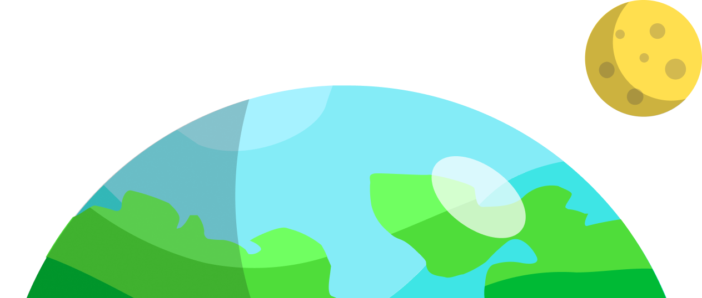

. Sun
The sun is a huge glowing ball of hot plasma at the center
of our solar system and provides the vital
energy needed for life on Earth. This energy radiates outwards in the form of heat and light, providing
warmth and light to the entire solar system
Temperature
+-5,500°
Celsius



3 . Earth
Earth is the third planet from the Sun and the only
known planet to support life. Earth is the only planet known to harbor life. It's a diverse and
dynamic world with a wide range of ecosystems, climates, and geological features.
Moon
Earth has one natural satellite, the Moon, which plays a role in stabilizing the planet's rotation and
tides. The Moon's gravitational pull causes ocean tides to rise and fall.